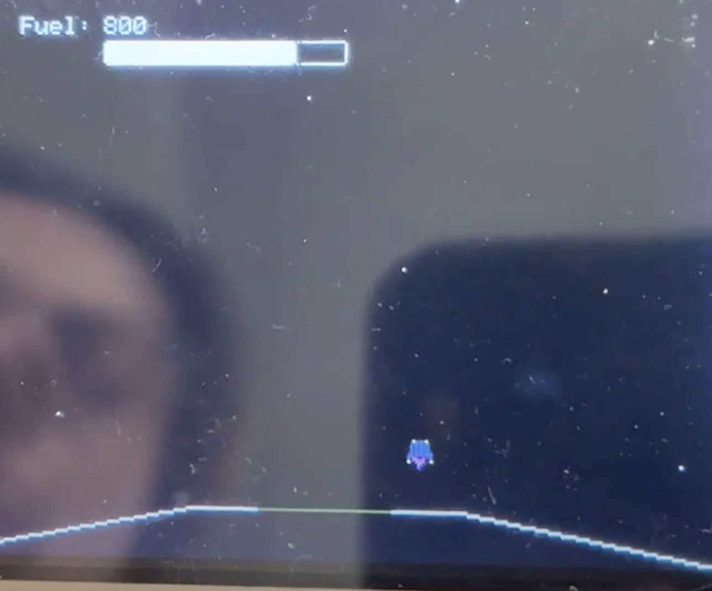

Lunar Lander
Designed a Lunar Lander game using custom built drivers and libraries. Such drivers libraries to interact with the touchscreen, switches, buttons, interrupts, and timers.
Description
This game included a basic physics simulator to properly simulate gravity, acceleration, and velocities and different angles. There were 5 levels of increasing difficulty. The controls were some basic buttons from the xylinx board. We hand animated each angle of the lander and every angle, both while accelerating and while not accelerating. We also included a fuel gauge that would decrease as the player accelerated and once empty would no longer allow the player to accelerate. We also programmed collisions with our map and animated an explosion which can be seen in the submission video link at the bottom. This was done using mostly the C programming language.
 On the right is a picture of the screen during some gameplay. This is level one and the landing pad is the yellow horizontal space.
 On the left is a screen shot of the some of the sprites that we created to animate the lander at different angles.
On the left is a screen shot of the some of the sprites that we created to animate the lander at different angles.
Future Iterations/Improvements
Future iterations of this project might include additional levels, more discrete values between speeds for smoother acceleration, and possibly creating a new driver for external input from some kind of remote.
Youtube link: Submission video